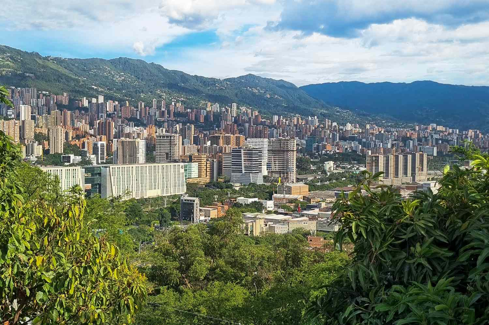
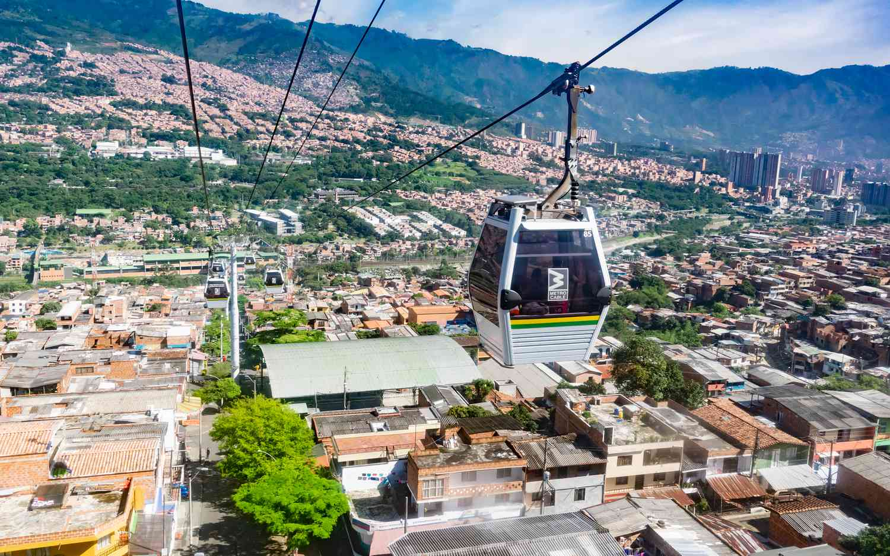
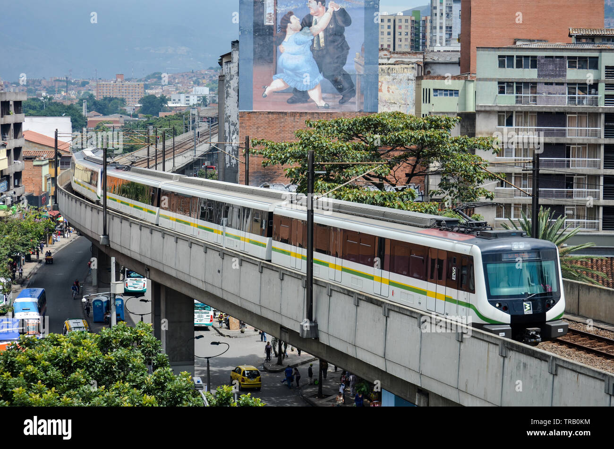

Medellin

Medellín es reconocida a nivel internacional como una ciudad que ha logrado una notable transformación urbana en las últimas décadas. Pasó de ser una ciudad con altos índices de violencia a convertirse en un referente de innovación, desarrollo tecnológico y planificación urbana. Uno de los aspectos más destacados de Medellín es su sistema de transporte integrado, que incluye metro, metrocable y otros medios que facilitan la movilidad de los ciudadanos, incluso en zonas de difícil acceso. La ciudad también ha apostado por la educación y la tecnología como pilares de su desarrollo, promoviendo la creación de centros de innovación, emprendimiento y formación académica. No obstante, Medellín aún enfrenta retos en materia de seguridad, especialmente en algunas comunas donde persisten conflictos relacionados con estructuras criminales. A pesar de estos desafíos, Medellín continúa siendo un modelo de desarrollo urbano y un ejemplo de cómo la inversión en educación, infraestructura e innovación puede transformar una ciudad.
- Reconocimiento internacional por innovación
- Desarrollo de transporte integrado
- Proyectos de inclusión social
- Crecimiento en tecnología y educación
Economía
Su economía se basa en:

- Industria
- Tecnología
- Innovación
- Emprendimiento
Transporte e infraestructura
Medellín cuenta con uno de los sistemas de transporte más eficientes del país:

- Metro
- Metrocable
- Tranvía